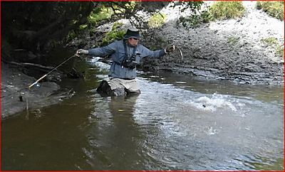
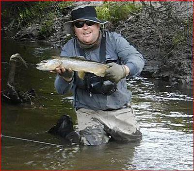
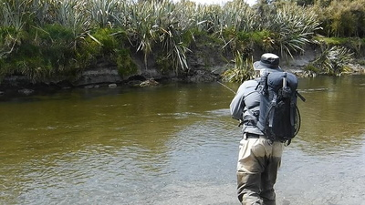
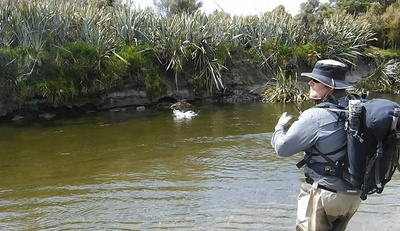
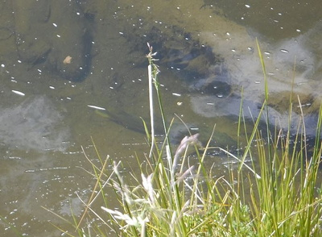

釣行日誌 ＮＺ編 「一期一会の旅：A Sentimental Journey」
名人の秘技の数々
11-23(FRI)-5
なんとそれから15分以上粘り続け、30回めぐらいの振り込みで、ニンフの流下に合わせてごくわずかに下流側へ動かしていたロッドがギュッと立てられた。ティップから大きく曲がる。ついにブラウンが喰ったのだ！
「ヒャッホー！ やったねぇ！」
「ヘイッ、ゴウ！ ビデオ撮ってるか？」
「もちろん！ バッチリだよっ！」
楽に50cmは越えていそうな魚体が短い糸の先で暴れ回る。しかしディーンは事も無げにグリップから70cmほど上のブランク部分でロッドを保持し、鱒をいなしながらティペットを握り、ネットも無しでひょいひょいという感じで取り込んだ。

ロッドのあんな位置を握って鱒とファイトしたり、ティペットを掴むなんてことは僕にはとても怖くて難しいのだが、さすがは名人である。彼が差し上げて見せた鱒は、居着きだろうかやや色合いがくすんでいて少々痩せていた。冬場の産卵期からの回復途上なのだろう。静かな沢の流れ込みで、ご馳走のホワイトベイトが遡上して来るのを待ち構えていたのかも知れなかった。

それにしてもさすがは南島西海岸の腕っこきガイドだけあって、ポイントの在処や釣り方まで本当に良くこのエリアを熟知しているものだなぁと、改めてディーンの力量に感動した。
午後３時半を過ぎて、まだまだ遡行は続く。対岸の崖の上にフラックスが密生し、細長い葉が茂るポイントに出た。流れは緩やかで、こちら岸は浅く、対岸の奥深くに点々と暗い淀みが連なっている。僕がブラインドで何回か狙ってみるが、水際から5cmか10cmというギリギリのレーンまでにはどうしてもフライが届かない。見かねたディーンが、ちょっと貸してみて、と言うのでロッドを手渡すと、さすがに流麗なキャストで、ダブルホールも加えずにピンポイントでストリーマーを打ち込んだ。

すかさず上流側へメンディングしつつストリッピングを始める。４回目くらいのアクションでロッドが大きく曲がり、彼は上体をぐっと起こして合わせた。

『やったな！さすがっ！』
と感心して見ていると、ラインを手繰ってテンションを掛け始めた時点でフワッとフックが外れてしまった。
「ああ～残念....」
と、ディーンは再び同じあたりにキャストを繰り返す。どうやら外れた鱒がまだ居るらしい。それから３投後、また彼が大きくロッドを立てた。
『あっ！？ また喰ったのか？』
あれだけ狡猾で神経質、猜疑心の強いブラウンが１度バレた後でまたフライを喰ったことに驚きつつ見ていると、彼がラインを巻き取りにかかる。気の毒なことに、僕のリールに巻いてあるコートランドのフライラインはバッキングの量が足りず、巻き上がりの直径が小さいので時間が掛かるのであった。するとブラウンは下流へ走り、ロッドがギュ～っと引き絞られ、次の瞬間またしてもフックが外れた。
『うわぁ、また外れたかぁ～！』
ディーンはいっこうに残念がるふうでもなく、またキャストで狙っている。２度もフッキングしてあれだけ暴れたのにフックが外れたらまだあの辺をウロウロしているようだった。さらに２分あまり倒木の陰や背後を攻めてみたが、さすがに同じ鱒が３度喰うことは無かった。うーん、こんなこともあるんだなぁ....としきりに感心しつつ彼からロッドを受け取った。
川が大きく左にカーブした所に淀んだプールが出来ており、太い流木が沈んでいた。ディーンが微笑しつつ水面の１点を指さすので、そちらを覗き込むと、沈木の幹の陰に大きな鱒がじっとしている。完全な止水なのでヒレも動かしていない。彼曰く、
「ありゃ産卵後でまだ元気になっていないか、そうで無ければ病気の魚だろうな。」
とのこと。

あれを狙うのは可哀想なので、次を探して歩き出す。
釣行日誌ＮＺ編 目次へ
サイトマップ
ホームへ
お問い合わせ